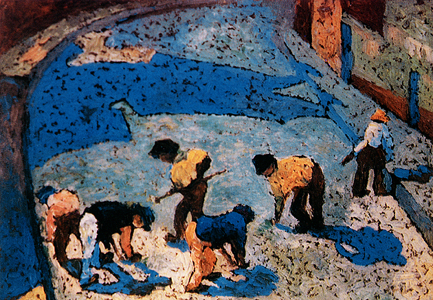
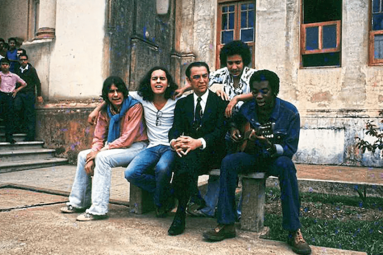
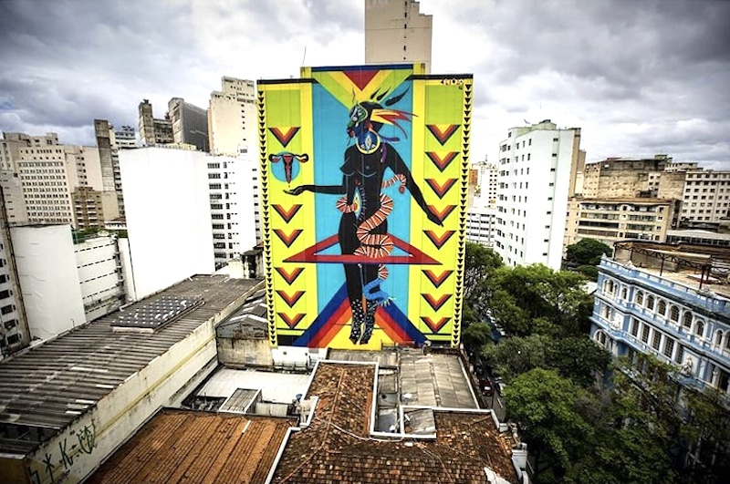

Arte
A arte mineira é muito plural, e o objetivo desta página é apresentar um pouco da história da arte
mineira e
seus artistas,
além de apresentar um pouco dessa variedade.
A arte no período colonial teve seus grandes nomes, como Aleijadinho que era um escultor que ficou
marcado
como um dos
mais importantes no barroco, aliás, Minas Gerais tem uma relação profunda com o barraco, e possui muitas
igrejas neste estilo,
outro importante artista mineiro do barroco foi o Mestre Ataíde, ele era pintor e professor.

A arte moderna também chegou a Minas e alguns anos depois da Semana de Arte Moderna de 1922, uma grande
quantidade de artistas mineiros se juntaram ao modernismo.
Mesmo que tenhamos tendência a nos lembrar mais de artistas paulistas na Semana de Arte Moderna de 1922,
estavam lá dois artistas mineiros,
sendo um deles um dos poucos que receberam aplausos, estes artistas eram: Agenor Barbosa e Zina Aita.
Estava entre os artistas que se juntaram ao movimento depois Drummond, que mantinha uma amizade com
Mário de
Andrade.

A arte mineira é muito variada e está presente também na música, ela está aqui desde o período colonial
quando era mais voltada para o
catolicismo. Além disso, Minas Gerais, mais especificamente Belo Horizonte, é o berço do Clube da
Esquina,
que revolucionou o MPB.

Mas se engana quem pensa que só de barroco e de MPB vive Minas, este estado é, como dito anteriormente,
plural e conta com muitas
influências. Não podemos deixar de citar o rap mineiro e o grafite, ainda mais quando o estado possui
nomes
tão relevantes na área, como
como a grafiteira Tainá Lima, ou o nome artístico: Crioula, responsável por colorir as ruas da capital
minereira e o rapper Djonga.
